"Every child deserves a champion; an adult who will never give up on them."
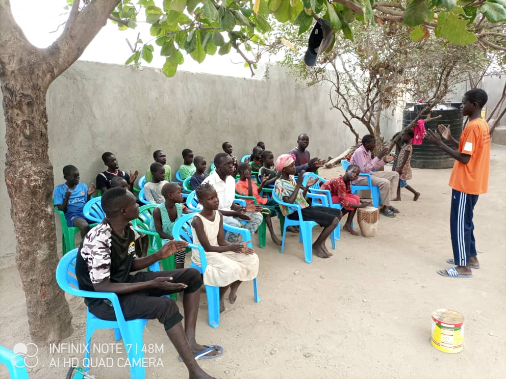
Since 2012, Juba Rescue Centre has provided a safe and nurturing home for vulnerable children in South Sudan. More than simply offering shelter, we strive to create a loving family environment where every child is protected, valued and encouraged to reach their full potential.
Through education, healthcare, emotional support and community partnerships, we continue to restore hope and build brighter futures for children who deserve every opportunity to thrive.
Discover Our StoryBehind every statistic is a child whose life has been transformed through love, care and the generosity of supporters around the world.
Children Rescued
Ages Supported
Serving Since
Care & Protection
Every smile tells a story of resilience. Every lesson, meal and moment of laughter is made possible through the kindness of people who believe every child deserves hope.
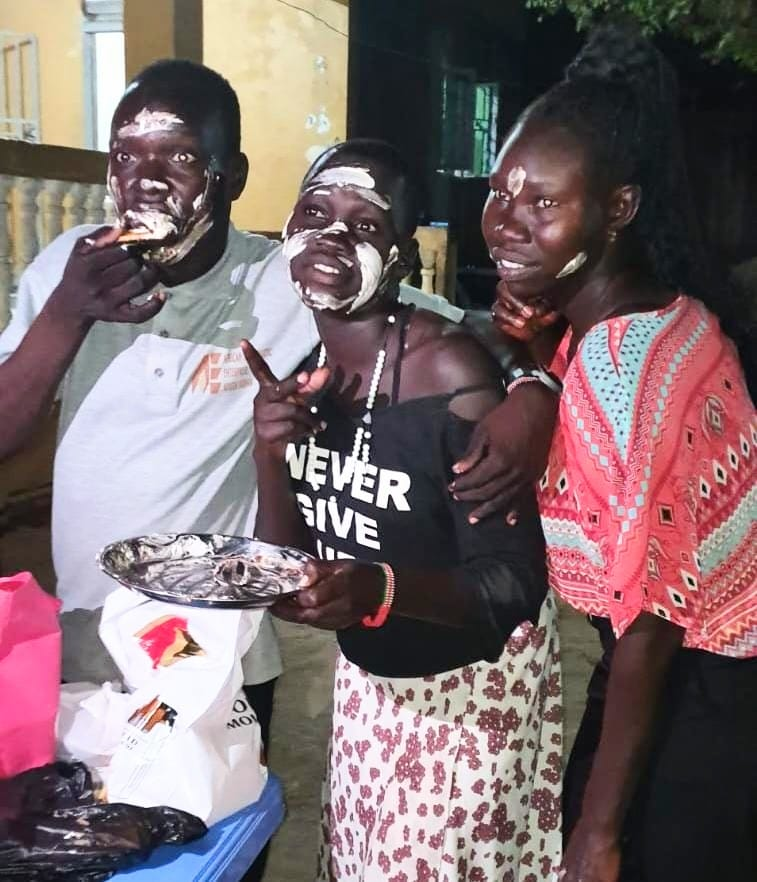
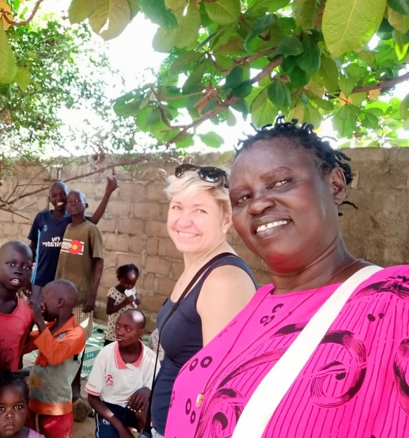
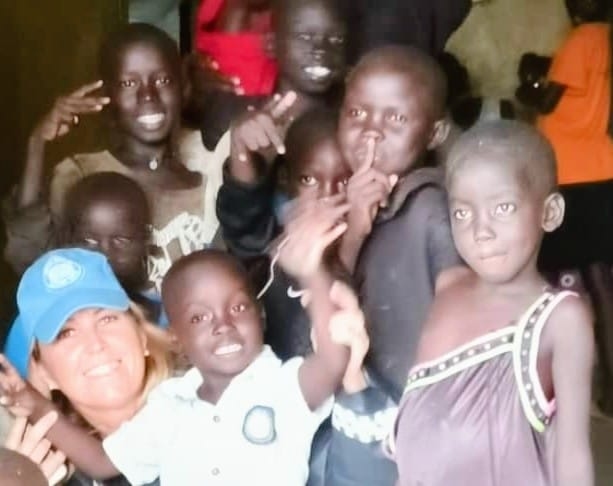
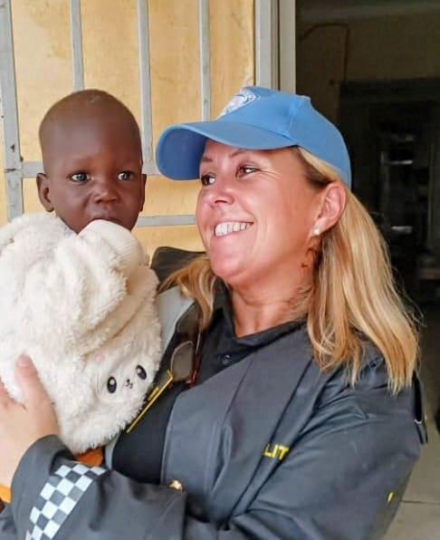
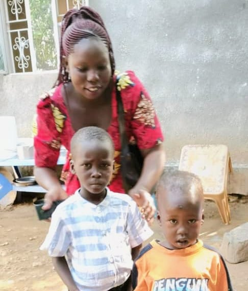
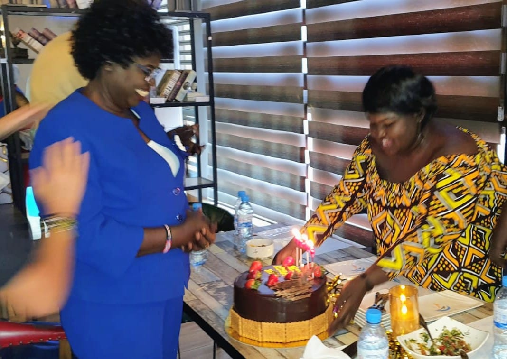
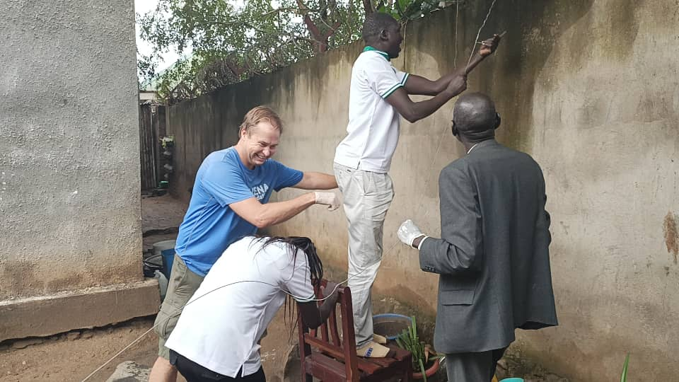
Since its establishment, Juba Rescue Centre has been forced to relocate several times due to rented accommodation and financial challenges. Every move disrupts children's education, daily routines and sense of stability.
Our dream is to build a permanent home with a perimeter wall and security features where every child can grow in safety, security and dignity for generations to come.
Learn MoreOur Mission: To welcome, nurture and build abandoned, orphaned and abused children by providing stable family-style living arrangements that center on their physical, emotional and spiritual growththrough healthcare, education and life-skills based on strong community partnerships.
Our Vision: To become a model institution that helps vulnerable children through effective approaches and programs that form a foundation for a bright, independent future aimed at successful community integration.
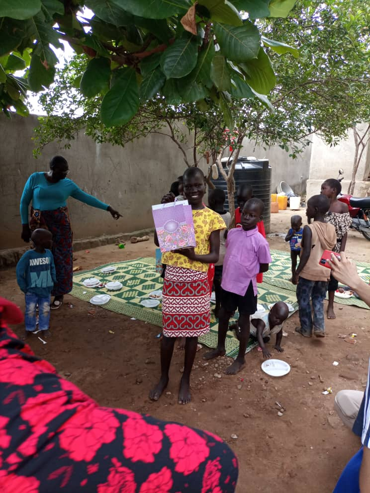
Whether you give, volunteer or partner with us, every act of kindness helps build a brighter future for vulnerable children.
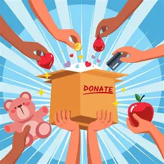
Support food, healthcare, education and daily care through one-time or recurring donations.
Donate Today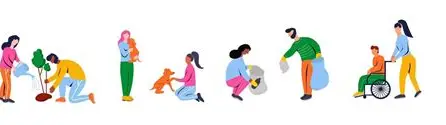
Share your skills, mentor children, teach, counsel or support our programmes remotely or in person.
VolunteerChurches, businesses and organisations can create lasting impact through meaningful partnerships.
Learn MoreEvery child’s smile is possible because of compassionate individuals, churches, organisations and friends who choose to stand with us.
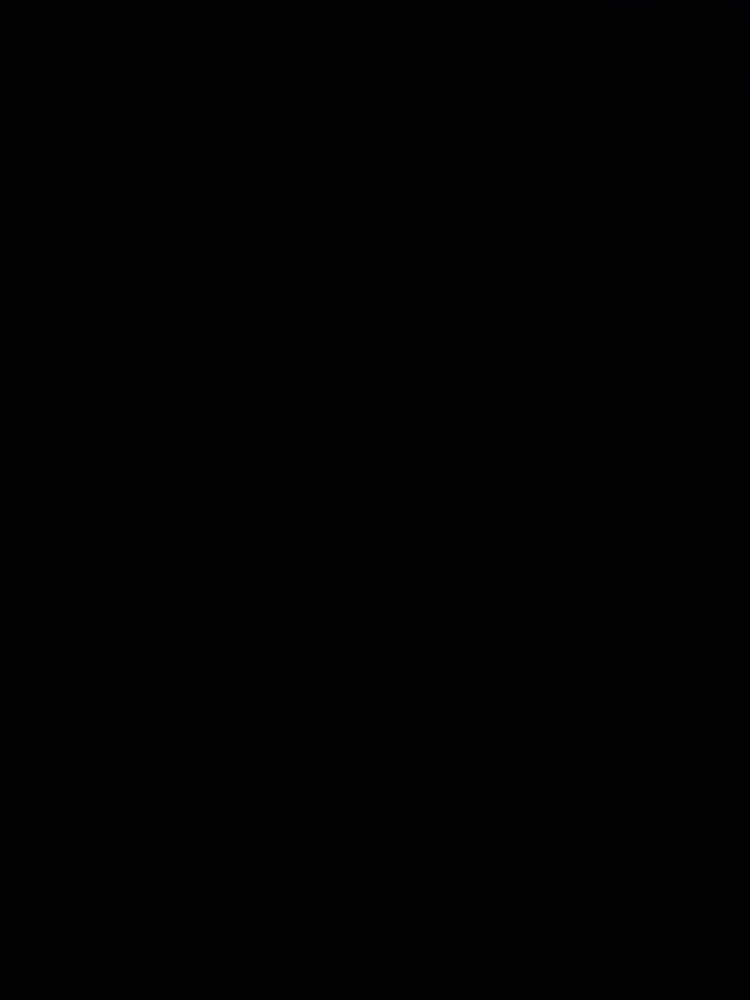
Your generosity helps us provide food, shelter, education, and hope for children in need.
Support a Child